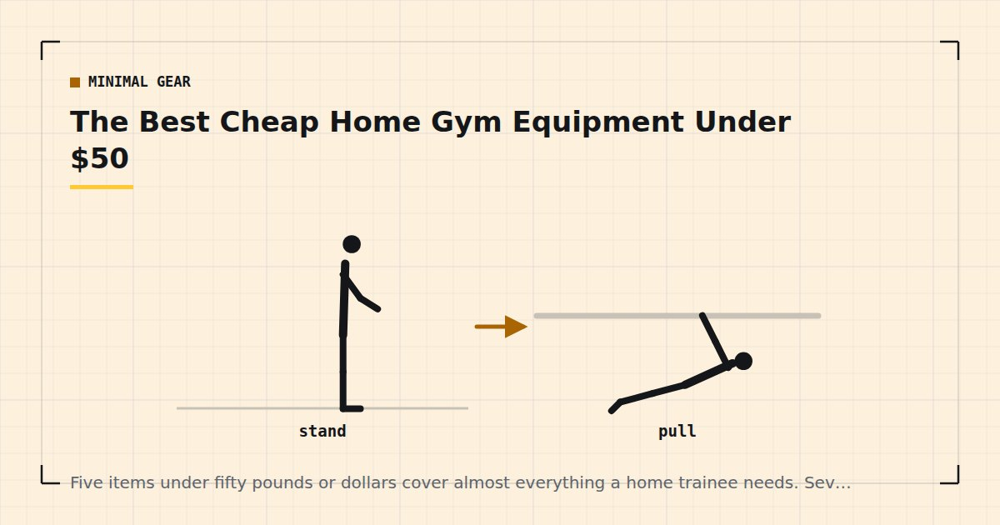

Minimal Gear
The Best Cheap Home Gym Equipment Under $50
Five items under fifty pounds or dollars cover almost everything a home trainee needs. Several popular purchases in the same price range add nothing at all.

Home gym equipment attracts a lot of spending that produces nothing. The pattern is consistent: people buy several inexpensive items, use two of them, and conclude that home training does not work.
Five things genuinely earn their place under about fifty pounds or dollars. Most of the rest does not, at any price.
The buying order
Order matters more than the individual choices, because each item should only be bought once the previous one has clearly hit its limit.
- Resistance bands — solves pulling, the one genuine gap.
- Doorway pull-up bar — if a suitable frame exists.
- A dense mat — if you are on a hard floor or above a neighbour.
- Furniture sliders — unlocks hamstring work.
- A weighted vest or loaded rucksack — when bodyweight variations run out.
1. Resistance bands
The purchase that changes what is trainable rather than what is comfortable. Pushing, squatting, hinging and bracing all work with nothing; pulling requires resistance, and bands supply it.
They also load overhead pressing, lateral raises and face pulls, which bodyweight training reaches poorly. And they store on a hook and travel in a pocket.
What to look for: a set with a range of strengths rather than a single band, and a door anchor. Tube bands with handles are more comfortable for pressing; long loop bands are more versatile and better for assistance work. The comparison is in loop bands vs tube bands, and a full session in the resistance band full-body workout.
2. Doorway pull-up bar
The other solution to pulling, and the one that eventually gives you pull-ups. Cheap, and the only item on this list with a genuine safety dimension — fit, frame suitability and wall damage are covered in the doorway pull-up bar guide.
Buy a leverage-mount bar, not a telescopic pressure-fit one. Check the rated capacity against your bodyweight with a real margin. And check your door frames first, because plenty of homes have none that are suitable.
3. A dense mat
Only necessary if you train on a hard floor or above a neighbour. On carpet with underlay, you probably do not need one.
What to look for: density over thickness. If you can compress it flat between finger and thumb, your bodyweight will do the same. Around 12 to 15 millimetres of dense EVA foam is the sensible target, and interlocking tiles let you cover the area you actually use rather than buying a mat-shaped rectangle — the detail is in exercise mats for noise reduction and yoga mat vs exercise mat vs puzzle tiles.
The cheap route: rubber-backed carpet tiles sold for flooring cost far less per square metre than anything fitness-branded, and use exactly the right material.
4. Furniture sliders
The cheapest item on this list by a distance and genuinely useful, because they unlock hamstring curls — a movement with no good bodyweight alternative. Felt-bottomed for hard floors, plastic for carpet. The exercises are in furniture sliders for core and leg training.
5. A weighted vest, or a rucksack
Only once bodyweight variations are genuinely running out, which for most people takes a year or more.
A rucksack loaded with books does the same job for nothing and is the better first move — see DIY home gym equipment. A vest is more comfortable and more evenly distributed, which matters once the load is substantial. Adjustability is the feature worth paying for — see weighted vest training.
What to skip at any price
Popular inexpensive items that add little, and why.
Push-up handles. Marketed as increasing range of motion and protecting wrists. The range increase is real and small, and two books do the same thing. If wrist pain is your issue, that is worth addressing properly rather than working around.
Ab rollers, initially. The exercise is excellent and it is far too hard for most beginners, so the wheel sits unused. Buy one after you can hold a solid plank for a minute — the progression is in the ab wheel progression.
Very light dumbbells. A pair of two-kilo dumbbells is too light for anything except rehabilitation and rear-deltoid work, and a band does the latter better.
Doorway resistance trainers and chest expanders. Largely superseded by a decent band set at similar cost.
Vibrating plates, EMS belts, and anything promising passive results. The evidence for these producing meaningful strength or body composition change is weak, and they occupy space and money that a band set would use better.
Grip strengtheners. Fine, but hanging from a bar trains grip more effectively and you probably already have the bar.
Buy nothing for two months first
The single most useful piece of buying advice here.
Equipment does not create consistency, and the failure mode is nearly always that the routine stopped rather than that the equipment was inadequate. Train with nothing for two months. You will then know which gap you actually hit — it is almost always pulling — rather than which one you imagined you would.
Adult activity guidance asks for muscle-strengthening activity involving all major muscle groups on two or more days a week.1 Nothing in that requires equipment, and light loads taken close to failure produce comparable adaptation to heavy ones.2 The case for buying anything is convenience and coverage, not necessity.
Buying second-hand
Worth considering for the items where condition is easy to assess and hard to get wrong.
Good second-hand: dumbbells, kettlebells and weight plates. They are cast iron, they do not wear out in any meaningful sense, and a scratched dumbbell performs identically to a new one. They are also expensive new and heavily discounted used, because shipping weight makes them costly to sell online and people move house. This is the single best category for buying used.
Acceptable second-hand: pull-up bars and benches, provided you can inspect them. Check for deformation, cracked welds, loose bolts and compressed pads. Reject anything with visible bending.
Avoid second-hand: resistance bands and anything else made of latex. They degrade with age, UV and use, and you cannot assess how a band has been stored. A band that fails under tension recoils toward your face. New bands are cheap enough that this is not a saving worth making.
If you can only buy one thing
Buy the bands. Not because they are the most enjoyable purchase — a pull-up bar is more satisfying — but because they are the only item that works in every home regardless of door frames, floor type, ceiling height or tenancy terms.
A pull-up bar depends on having a suitable frame, which plenty of homes do not. A mat depends on your floor. Sliders depend on the surface. Bands depend on nothing except a door, and even without one you can stand on them.
They also cover the widest range of what bodyweight training misses: rows, pulldowns, face pulls, overhead pressing, lateral raises and direct arm work. That is most of the upper body's gaps closed by one item that fits in a coat pocket.
If your budget is genuinely one item, that is the one. Everything else on this page is an improvement to training you can already do; bands are the thing that lets you train something you otherwise cannot.
Where to go next
For the full priority order including more expensive items, see the minimalist home gym guide. For a complete shopping list at a fixed budget, see the home gym setup under $100.
Frequently asked questions
What is the best cheap home gym equipment?
Resistance bands first, because they solve pulling — the one movement pattern bodyweight training cannot supply. Then a doorway pull-up bar if a suitable frame exists, a dense mat if you are on a hard floor, furniture sliders, and eventually a weighted vest.
What home gym equipment is not worth buying?
Push-up handles, very light dumbbells, doorway chest expanders, grip strengtheners, and anything promising passive results such as vibrating plates or EMS belts. Ab rollers are excellent but too hard for beginners, so buy one later rather than first.
Do I need equipment to work out at home?
Only for pulling. Pushing, squatting, hinging and bracing all work with nothing at all. Adult activity guidance requires no equipment, and light loads taken close to failure produce comparable adaptation to heavy ones.
Should I buy equipment before I start training?
No. Train with nothing for two months first. Equipment does not create consistency, and after two months you will know which gap you actually hit — almost always pulling — rather than which one you imagined.
Are cheap resistance bands any good?
Generally yes, though they are consumable. Latex degrades with UV, heat and use, so inspect for nicks and thin spots before each session and replace at the first sign of wear regardless of what you paid.
Sources and further reading
- World Health Organization. WHO Guidelines on Physical Activity and Sedentary Behaviour. 2020.
- Schoenfeld BJ, Grgic J, Ogborn D, Krieger JW. “Strength and Hypertrophy Adaptations Between Low- vs. High-Load Resistance Training: A Systematic Review and Meta-analysis.” Journal of Strength and Conditioning Research, 2017;31(12):3508–3523. PubMed.
- NHS. Strength and Flex exercise plan.
- Schoenfeld BJ, Ogborn D, Krieger JW. “Dose-response relationship between weekly resistance training volume and increases in muscle mass: A systematic review and meta-analysis.” Journal of Sports Sciences, 2017;35(11):1073–1082. PubMed.
Comments
Comments are not enabled yet. Add a hosted comment embed (Disqus, Commento, Giscus) inside this container when you are ready.